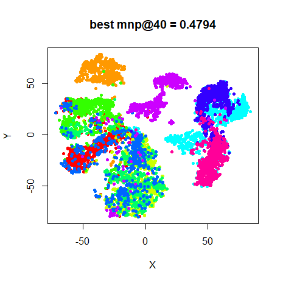
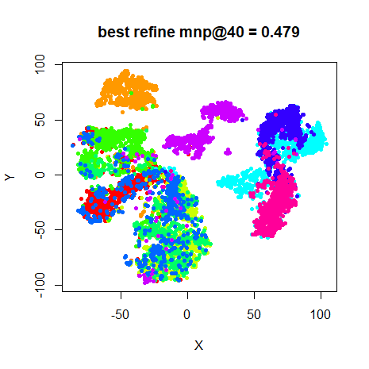
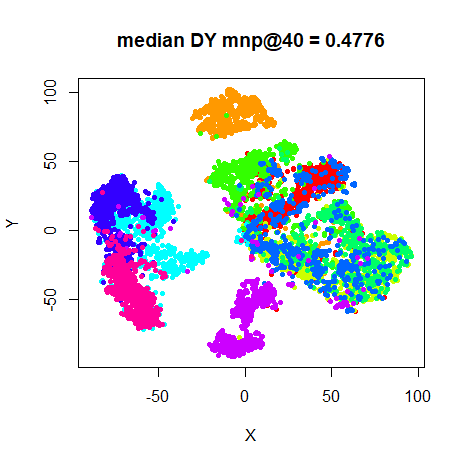
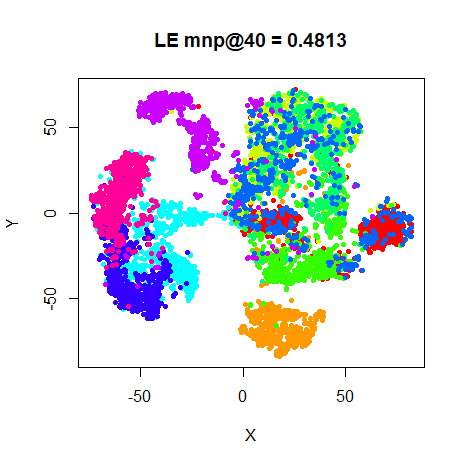

This article retains its original experiments and examples. For current package usage, see the usage guide.
When looking at initialization in t-SNE, I noted that using PCA or Laplacian Eigenmaps gave results that were hard to distinguish from the usual random initialization used in t-SNE, even allowing for choosing the result with the lowest error out of ten runs, with the PCA and LE method therefore having the two advantages of being deterministic and not requiring as long to run.
The other thing that bothers me about choosing the lowest-error result from ten runs is how wasteful it is. Is there really no useful information to be extracted from the other nine results? An obvious strategy is to aggregate the results over all the runs somehow. We can’t use the output coordinates directly, because of the random initialization, but we could calculate the distance matrix for each result, and then aggregate them. Then, we could attempt to come up with a new set of coordinates that best match the aggregated distances via MDS. Finally, if needed, we could run t-SNE again using the aggregated coordinates.
Here’s an outline of how this could work:
- Run
smallvis_repten times to produce ten t-SNE outputs. - For each run, calculate the distance matrix of the final coordinates.
- Calculate the average distance for each pair of points to create a
new distance matrix. I looked at both
meanandmedianand didn’t notice a big difference in results. As the median is more robust, I went with that for the results that follow. - Run Classical MDS on the distance matrix to initialize the
coordinates. If you use a distance matrix as input to
smallvisand useY_init = "pca", this is already exactly what happens. - Refine these coordinates further with metric MDS, i.e. use
method = "mmds". - A final t-SNE refinement initialized from the MMDS coordinates.
In an ideal world, we could stop at the Classical MDS stage, but in fact a bit of MMDS refinement followed by a final t-SNE run was necessary.
The obvious downside to is that a naive approach to the averaging would require storing multiple distance matrices, which could take up 3GB of RAM on the larger datasets (N = 6000) I use. Alternatively, you only ever need 10 distances in memory if you loop through each pair of points across all output coordinates at once, although this commits the cardinal R sin of explicit looping and is not kind to memory locality, so it’s quite slow.
Even if we ignore the time taken to process the distance matrices and refine them via MDS, we still end up doing an extra t-SNE run. So a fair comparison to the method described above would be to carry out the final t-SNE run using the coordinates from the best of the ten random-initialized runs.
Datasets
See the Datasets page. We shall also make use of a Swiss Roll dataset here. Because random initialization tends to result in small local pieces of the manifold being preserved, perhaps the averaging method will help preserve more of these pieces in one embedding. But otherwise we shouldn’t hope for much. The settings for the Swiss Roll are:
sr3k <- snedata::swiss_roll(n = 3000, max_z = 30)Evaluation
Apart from visualizing the results, the mean neighbor preservation of
the 40 closest neighbors is used to provide a rough quantification of
the quality of the result, labelled as mnp@40 in the
plots.
Settings
For settings, we’ll use the ones given in the original t-SNE
paper. We’ll run 10 embeddings. Note that we set
ret_extra = TRUE to ensure we get back the extra info that
will let us work out which of the results had the lowest error (which
we’ll need later).
# Generate 10 t-SNE embeddings
iris_repn <- smallvis_rep(
n = 10,
keep_all = TRUE,
X = iris,
scale = FALSE,
perplexity = 40,
eta = 100,
exaggeration_factor = 4,
stop_lying_iter = 50,
ret_extra = TRUE
)Here’s some code that will combine the results of
smallvis_rep and return the median distance matrix:
combine_dy <- function(all_res, stat_fun = stats::median) {
res_dy <- NULL
nres <- length(all_res)
resi <- all_res[[1]]
if (class(resi) == "matrix") {
Y <- resi
} else {
Y <- resi$Y
}
nr <- nrow(Y)
dijs <- rep(0, nres)
res_dy <- matrix(0, nrow = nr, ncol = nr)
for (i in 1:(nr - 1)) {
for (j in (i + 1):nr) {
for (k in 1:nres) {
if (class(resi) == "matrix") {
Y <- all_res[[k]]
} else {
Y <- all_res[[k]]$Y
}
dijs[k] <- sqrt(sum((Y[i, ] - Y[j, ])^2))
}
res_dy[i, j] <- stat_fun(dijs)
res_dy[j, i] <- res_dy[i, j]
}
}
res_dy
}The distance matrix-based refinement process can then be carried out like so:
iris_med <- combine_dy(iris_repn, stat_fun = stats::median)
iris_med_mmds <- smallvis(
as.dist(iris_med),
method = "mmds",
scale = FALSE,
Y_init = "pca",
epoch = 5,
eta = 0.0001
)
iris_med_refine <- smallvis(
iris,
scale = FALSE,
perplexity = 40,
Y_init = iris_med_mmds,
eta = 100
)The learning rate eta for the MMDS step was found by
trial and error.
For the alternative approach where we’ll just refine the “best”
result, first we’ll need to extract the best result from the output of
smallvis_rep. When setting keep_all = TRUE and
ret_extra = TRUE, every result has an extra entry called
best_rep, which indicates which of the results had the
lowest error. You could do this yourself by looping over each result and
comparing the last entry in the itercosts arrays, but it’s
such an obvious yet fiddly task that smallvis_rep does it
for you. The resulting syntax for extracting the best result is
admittedly ugly:
iris_best <- iris_repn[[iris_repn[[1]]$best_rep]]With that in hand, we can carry out one more t-SNE run with the best result as result as the initial coordinates.
iris_best_refine <- smallvis(
iris,
scale = FALSE,
perplexity = 40,
Y_init = iris_best$Y,
eta = 100,
exaggeration_factor = 4,
stop_lying_iter = 50
)As we did in the original initialization, we’ll also consider the even simpler case of an initialization from Laplacian Eigenmaps (scaled PCA gives very similar results, so there’s no little point using both). These results have been regenerated alongside the other results here, but hopefully will be quite similar to those from the original initialization discussion. Although that discussion indicated there was no strong reason to apply early exaggeration to these initializations, I did so anyway just to be consistent with the random-initialized results.
iris_le <- smallvis(
iris,
scale = FALSE,
perplexity = 40,
Y_init = "lap",
method = "tsne",
eta = 100,
exaggeration_factor = 4,
stop_lying_iter = 50
)Results
For each dataset, there are four images. On the top row, the left image is labeled “best”, and is the result with the lowest final error from the ten random initializations. The right hand image, “best refine” shows the result of the extra t-SNE run using the best result as the initial coordinates.
On the bottom row, the left hand image “median DY” indicates the result of embedding the median distance matrix and then using those coordinate to initialize t-SNE. The right hand image, “LE” shows the result of just carrying out a single t-SNE run with the Laplacian Eigenmap initialization.
fashion
 |
 |
 |
 |
A brief perusal of the images will show that the median distance
matrix approach doesn’t drastically improve the visualizations. And in
terms of neighborhood preservation, it’s normally ever-so-slightly
worse, although I wouldn’t take the differences in the values very
seriously. Only the swiss results shows a potential
improvement over the best result, but there’s still a large tear and
twist in the result. Given the extra effort this approach entails, we
can call this one a definitive failure.
The results of refining the best result also seem to have almost no effect. In fact, in many cases, the mean neighbor preservation is somewhat reduced between the “best” and “best refine” results, although the error itself is reduced.
Confirming the results from the previous time I compared the Laplacian Eigenmap initialization with random initialization, the Eigenmap initialization performs very creditably.
Conclusions
The obvious conclusion is that the median distance matrix approach is a bad idea. If you must spend the extra time, re-initializing from the best result is less of a waste, but still seems pretty pointless. These results also continue to point to using the Laplacian Eigenmap initialization over random initialization.
It’s easy to think of other, increasingly complex ways to combine the output of random initializatons that might do better than what I’ve presented here, but these results are terribly encouraging. And anything that requires a distance matrix seems like a sticking point in terms of scaling up the process to larger datasets.